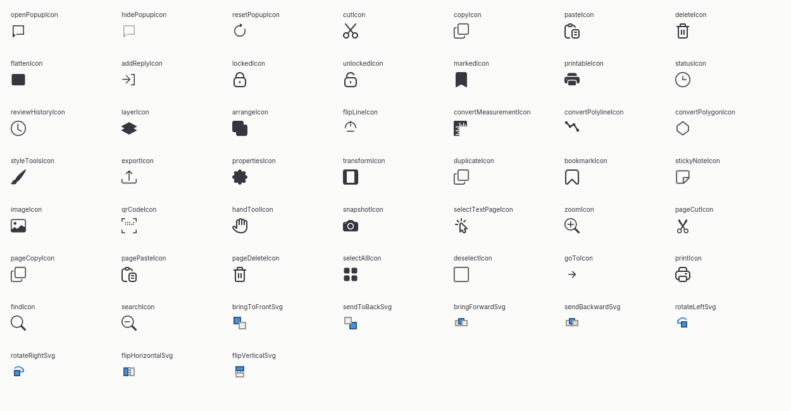
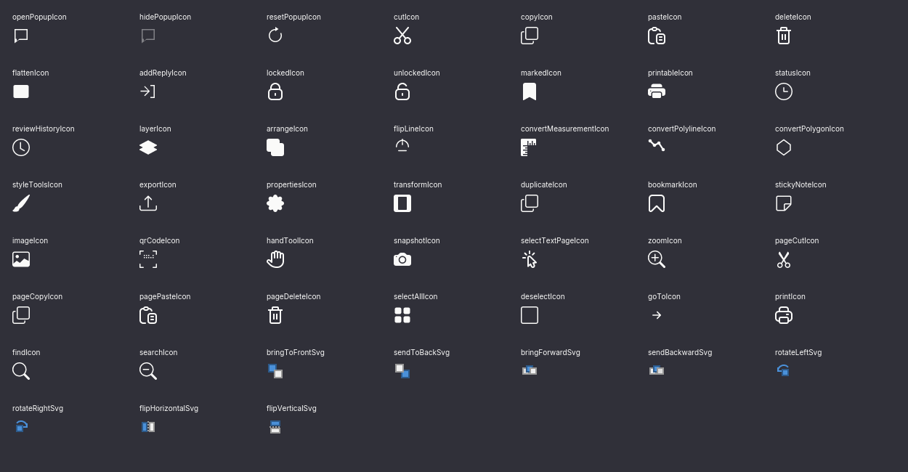

openPopupIcon
1 aanroep(en) · conditional-menu-or-selection162432
162432
52 SVG-exports uit het broncatalogusbestand zijn daadwerkelijk aanroepbaar in ContextMenu.jsx. Elke vorm is op 16, 24 en 32 px in Light en Forge te beoordelen.
selectAllIcon hoort bij de pagina; de lokale vorm met dezelfde naam hoort bij de miniaturen en staat in de letterlijke-SVG-review. Knippen, kopiëren en verwijderen in het pagina-contextmenu zijn zichtbaar maar permanent uitgeschakeld. Kleuren in de acht schikiconen zijn bronkleuren en blijven daarom behouden.Bronvormen op 24 px in de Iced-renderer. De acht meerkleurige schikiconen zijn zonder globale SVG-tint gerenderd; bij de overige vormen is de thematekstkleur toegepast. Dit onderscheid moet in de gedeelde Rust-component expliciet blijven.

